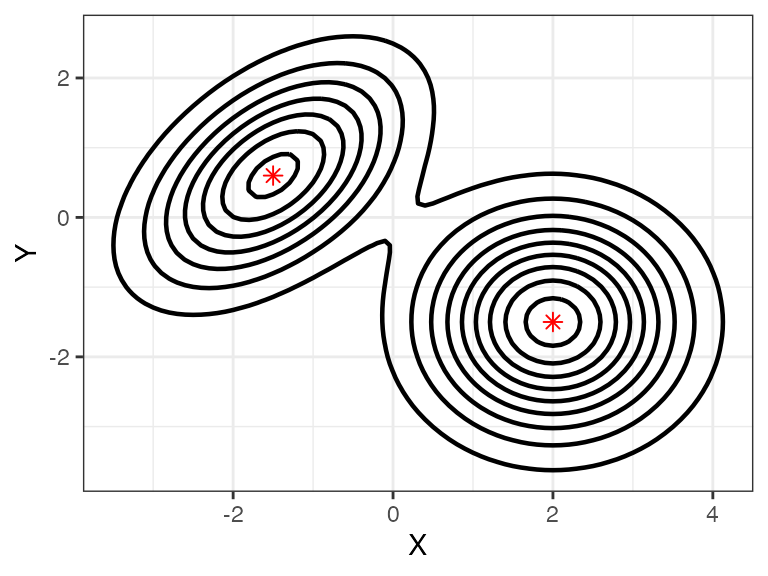
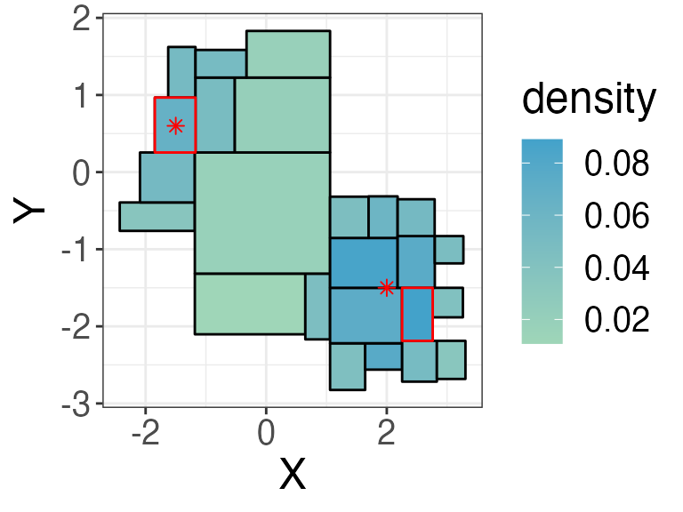
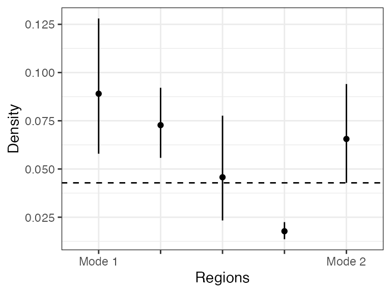

Mode Hunting with Beta Trees
Qian Zhao
2022-11-02
mode.RmdA mode in a continuous distribution is typically defined as the location where the derivative of the density vanishes. Another perspective is that the mode is where the probability mass is concentrated. In the context of a histogram, we can think of modes as a region where the average density is high compared to its neighbors. More specifically, suppose two regions \(R_1\) and \(R_2\) are distinct modes, then along any path connecting these \(R_1\) and \(R_2\) there exists at least one region \(R\) whose average density is lower than both \(R_1\) and \(R_2\). Because the Beta Trees histogram provides a confidence interval for the average density, we can compare the confidence bounds of these regions.
This vignettes demonstrates how to use the BetaTrees
package to identify modes in a Beta Tree histogram.
Example: mixture of two dimensional Gaussian variables
As an illustration, we sample data from a mixture of two-dimensional Gaussian distribution
n <- 2000 # num of obs.
d <- 2 # num of dim.The two-dimensional Gaussian are from the following distribution, and we visualize the the samples of 2000 observations below.
\[ \frac{2}{5} \mathcal{N}\left(\left(\begin{matrix}-1.5 \\0.6\end{matrix}\right),\left(\begin{matrix}1 & 0.5 \\ 0.5 & 1\end{matrix}\right) \right) + \frac{3}{5} \mathcal{N}\left(\left(\begin{matrix}2 \\-1.5\end{matrix}\right),\left(\begin{matrix}1 & 0 \\ 0 & 1\end{matrix}\right) \right), \]

First, we use BuildHist() function to create and
visualize a Beta Tree histogram. Here, we specify a confidence level
alpha = 0.1 and use weighted bonferroni method for multiple
testing correction.
hist <- BuildHist(X, alpha = 0.1, method = "weighted_bonferroni", plot= T)
From the figure, the densities are higher in the upper left and the
lower right regions. Next, we use the find_mode()
identifies the modes in the Beta Trees histogram. The function has three
parameters, the first input is the Beta Tree histogram, the second is
the dimension of the data, and the third parameter specifies the cutoff
the path length. Here, we set cutoff=1000, which means we
will look at every path between two regions. However, it is usually
infeasible to check every path because of computation constraint, so
typically we would set cutoff = 6.
modes <- FindModes(hist = hist$hist, d = d, cutoff = 1000)The modes has three components: mode
returns the index of the modes identified in the
hist, hist returns the input histogram, and
g returns a graph of all of the regions in the
histogram.
modes$mode ## [1] 22 6
hist$hist[modes$mode, ] # detail of the modes## [,1] [,2] [,3] [,4] [,5] [,6] [,7]
## [1,] 2.209631 -1.4616902 2.676533 -0.8745239 0.11307711 0.07356053 0.1626326
## [2,] -1.885450 0.2940145 -1.184586 0.8926120 0.07508307 0.04903103 0.1076871
## [,8] [,9]
## [1,] 61 6
## [2,] 62 6We highlight the two modes as well as plot the means of the two Gaussian mixtures. The shaded regions are the modes in the Beta Tree histogram and the asterisks are the means of the two components of the mixture of Gaussian.

In the next few sections, we describe how you can use the functions
in BetaTrees to identify modes in a Beta Trees
histogram.
Identifying modes in a Beta Tree histogram
FindModes proceeds in the following steps:
Order regions reversely by the empirical density. Initiate the list of modes by the region with the highest density.
Iterate through every region by order in (1), test if they are distinct modes from the current list of modes.
Return the list of modes.
In step (2), we say that \(R_1\) and
\(R_2\) are two distinct modes
if there exists at least one path from \(R_1\) to \(R_2\) such that there exists at least one
region \(R\) whose average density is
lower than both \(R_1\) and \(R_2\), i.e., \[
\mathrm{CI}_\mathrm{up}(R) < \min(\mathrm{CI}_\mathrm{low}(R_1),
\mathrm{CI}_\mathrm{up}(R_2)),
\] where \([\mathrm{CI}_\mathrm{low}(R),
\mathrm{CI}_\mathrm{up}(R)]\) is the confidence interval of the
average empirical density of \(R\). The
\((1-\alpha)\) confidence interval are
stored in the \((2*d+2)\) and \((2*d+3)\) columns of output matrix from
SelectNodes (or BuildHist). The function
is_connected() tests whether two regions are distinct
modes. Another subroutine in step (2) is to compute an adjacency matrix
of regions in the histogram.
Computing a adjacency matrix of regions in the histogram
Two regions \(R_1\) and \(R_2\) are neighbors if \[ [x^{\mathrm{low}}_{1,j}, x^{\mathrm{up}}_{1,j}] \cap [x^{\mathrm{low}}_{2,j}, x^{\mathrm{up}}_{2,j}] \neq \emptyset,\quad \forall j=1,\ldots, d. \] Here, we define each region by the lower and upper bound in each coordinate, i.e., \(R_1\) can be represented as \([x^{\mathrm{low}}_{1,1}, x^{\mathrm{up}}_{1,1}]\times \ldots \times [x^{\mathrm{low}}_{1,d}, x^{\mathrm{up}}_{1,d}]\).
compute_adjacency_mat() computes the adjacency matrix
for all of the regions in the histogram. The two inputs of the function
is a Beta Tree histogram hist and data dimension
d. In the output adjacency matrix \(A\), \(A_{i,j} =
1\) if \(i\)-th and \(j\)-th regions are neighbors and 0
otherwise.
adj <- compute_adjacency_mat(hist = hist$hist, d = d)
adj[1:5, 1:5] ## [,1] [,2] [,3] [,4] [,5]
## [1,] 0 1 0 0 1
## [2,] 1 0 0 0 1
## [3,] 0 0 0 1 1
## [4,] 0 0 1 0 1
## [5,] 1 1 1 1 0Testing if two regions are distinct modes
is_connected() tests if two regions are distinct modes
or not. The following code tests if the first and second modes are
distinct modes (the graph g is a graph based on the
adjacency matrix). The cutoff parameter specifies the
maximum length of path that the algorithm checks.
is_connected() outputs connected if the test
fails, i.e., the two regions are not distinct
modes.
g <- igraph::graph_from_adjacency_matrix(adj, mode = "undirected")
is_connected(i = modes$mode[1], j = modes$mode[2], g = g, ci = hist$hist[,6:7], cutoff = 6)## [1] "unconnected"To illustrate, we can plot the confidence interval for every region along a path connecting these two regions. As we can see, the upper confidence bound of one of the region is below the lower endpoints of both modes, and this is true for every path with length at most 6.
